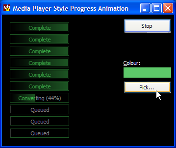

VB5 Media Progress Sample (62K)
VB5 Media Progress Sample (62K)
 VB6 Media Progress Sample (57K)
VB6 Media Progress Sample (57K)
 5 Jul 2003
5 Jul 2003
Rendering did not succeed on some Win9x/ME systems - the AlphaBlend . Fixed by using all code alpha blending for any pre-2000 system.
 Image Processing Using DIB Sections
Image Processing Using DIB Sections
 Hue Luminance and Saturation (HLS) Model and Manipulating Colours
Hue Luminance and Saturation (HLS) Model and Manipulating Colours

Media Progress Bar Renderer
How to render a gradient progress bar like the one in Windows Media Player
Windows Media Player has a neat progress bar showing how its getting on whilst burning files to CD or other long operations. This article presents a reusable class which draws a progress bar in a similar presentation. The resulting bar can be drawn to anything that exposes an hDC, and therefore can be integrated with a progress bar or even a Custom-Draw ListView exactly as Media Player does.
Using the Class
The class has two modes of operation: automatic sizing (which emulates the rendering performed by Media Player) and user-defined sizing. These are controlled by the AutoSize flag.
When AutoSize is False, setting the Width property directly controls the width of the progress bar.
When AutoSize is True the Width property is read-only, and returns the minimum width the bar requires to fully draw. The MinWidth property can be set to force the bar to draw into a wider area, which is useful if you have a column of bars to draw and you want them all to be the same width. The actual drawn width of the bar can be calculated using this code:
Width = IIF(bar.MinWidth > bar.Width, bar.MinWidth, bar.Width)
The other properties control the appearance of the bar. The background of the progress bar always draws black. The colour of the progress effect is controlled using the BarColor property: typically you will set this to a bright colour since the border and gradient bar will be rendered in a darker shade of this colour and only the text at the leading edge of the progress bar is actually in the pure form of the colour.
The Text property sets the text displayed on the bar, ShowPercent tells the control whether to display a percentage progress at the end of the caption. You can set the percentage progress either by using the Min, Max and Value properties, or by setting the Percent property directly.
Rendering Description
Rendering of the bar proceeds in three stages:
Border and Gradient Progress Bar
.This is drawn into a memory DC. The colours, based on the Media Player equivalent, are black for the background and a grey with R,G,B values of 100 for the border and end of the gradient. The gradient is drawn using the API call GradientFillRect unless the code is running under NT4 or Windows95, in which case a solid bar is drawn.
Creating the Text
We want the intensity of the text to be related to the gradient background over which it is drawn. Therefore the text is drawn into a memory DIB with all bits set to alpha = 0 (transparent) so it can be alpha blended with the background.
Blending the Text and Background
The transparent text DIB is alpha blended with the orignal background DIB using a constant alpha of 128 (or 50%). This is either done using the system API AlphaBlend function or using a code version if running under NT4 or Windows9x/ME (note that although Windows 98 and above support AlphaBlend, it can be buggy).
Colourising the Result
To get the final result, the DIB is colourised, but only in the area of the border and the gradient bar. This means the text which isn't on top of the bar remains grayed. This is achieved by applying colourisation to the appropriate pixels of the output.